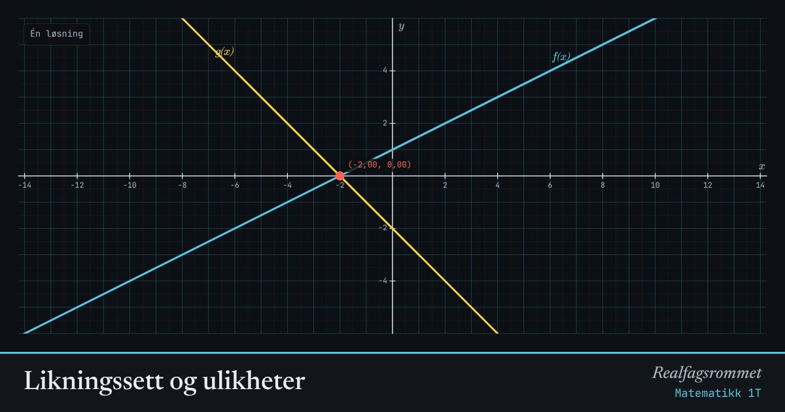

Likningssett og ulikheter
Løsningen av et likningssett er skjæringspunktet mellom grafene. En ulikhet er oppfylt der den blå grafen ligger over den gule.
Start animasjonen
Formler
Om animasjonen
Et punkt som ligger på begge grafene, oppfyller begge likningene samtidig. Derfor er skjæringspunktet løsningen.
To parallelle linjer (lik ) skjærer aldri hverandre: likningssettet har ingen løsning. Er linjene like, har det uendelig mange.
Med en linje og en parabel får vi en andregradslikning. Den kan ha to, én eller ingen løsninger.
Grønn strek på -aksen viser hvor ulikheten er oppfylt.
Prøv dette
- Lag to linjer som ikke skjærer hverandre. Hva har de felles?
- Løs likningssettet og grafisk. Sjekk ved regning.
- Velg linje og parabel. Juster til de bare berører hverandre i ett punkt.
- Bruk ulikheten: for hvilke er ?
Kompetansemål
- Matematikk 1T: Likninger, likningssett og ulikheter